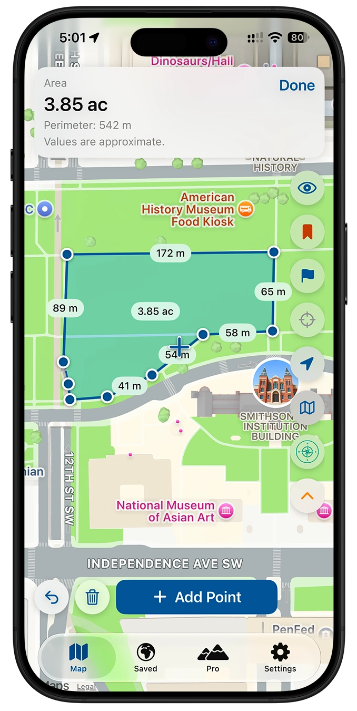

How it works
From one dropped pin to the whole journey.
-
01
Save
Drop a pin anywhere. Keep it forever.
Center the map on a spot and save it with notes, photos, voice memos, and a rating. Every pin keeps its coordinates, address, and local time zone, even offline.
- Temporary and persistent flags for quick marks
- Notes, photos, voice memos, and 1–5 star ratings
-
02
Organize
Every place, sorted your way.
Group pins into folders and categories, then browse them as a list, a photo grid, or by folder. Sort by distance to find what’s nearest right now.
- List, grid, folder, and photo views
- Import GPX, KML, and CSV; export PDF or CSV
-
03
Route planner
Optimize multi-stop routes, then track the journey.
Pick pins from any folder and Maplet builds a driving or walking route between them. Auto-optimize the stop order, check places off as you go, and hand the route to the navigation app you already use.
- Live distance, ETA, and journey progress tracking
- Open in Apple Maps, Google Maps, Waze, HERE, Gaode Maps, Baidu Maps, Yandex Maps, and more
-
04
Measure
Measure distance and area, then walk or drive it.
Drop points to measure the distance between them, or switch to Area for the size and perimeter of any shape. Tap walk or car to see the real route through your points, then tap Go to continue in your map app.
- Segment lengths and a running total as you add points
- Area and perimeter for any shape you outline
